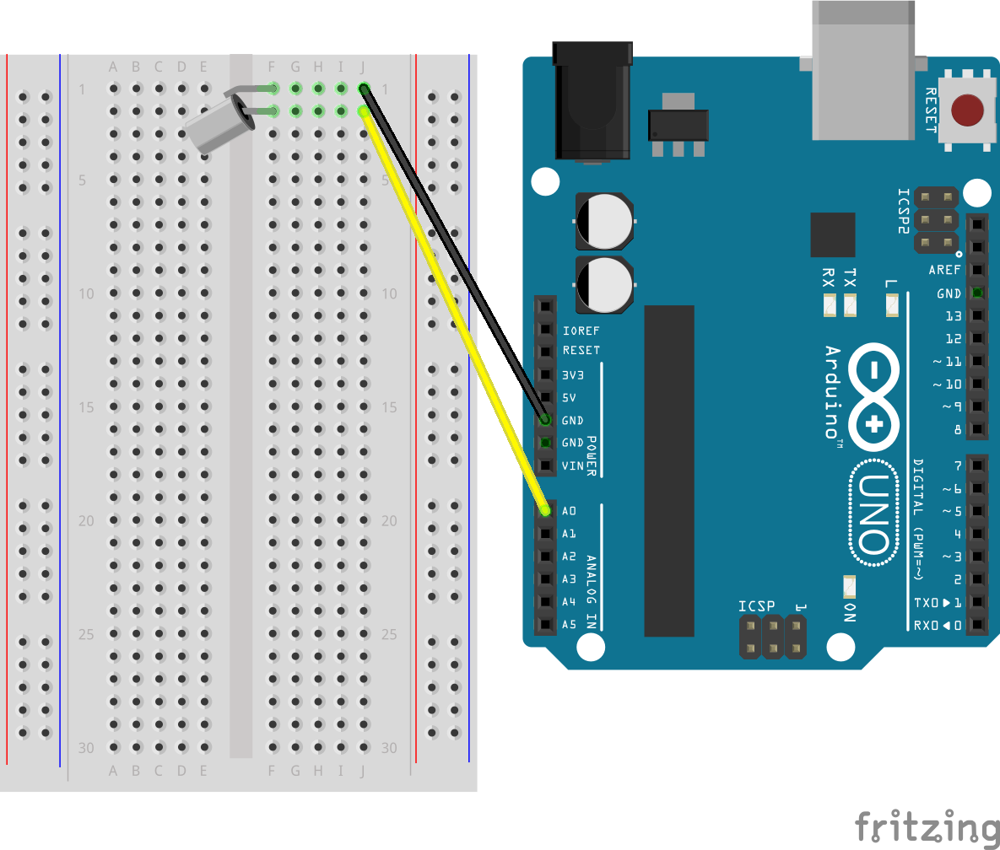
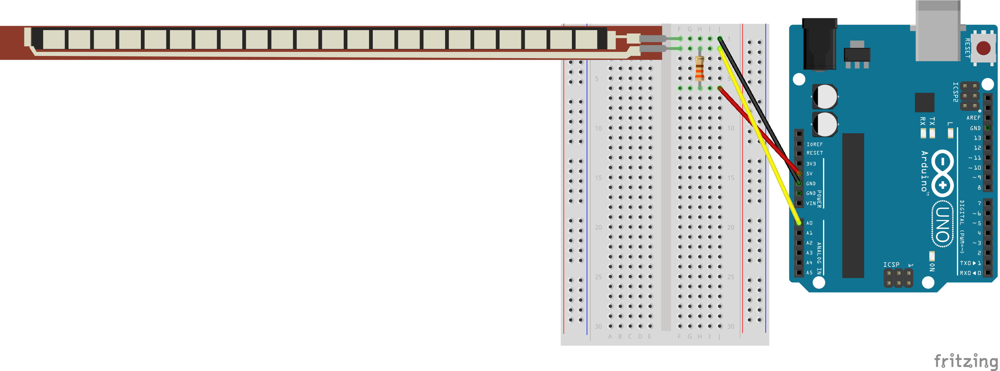
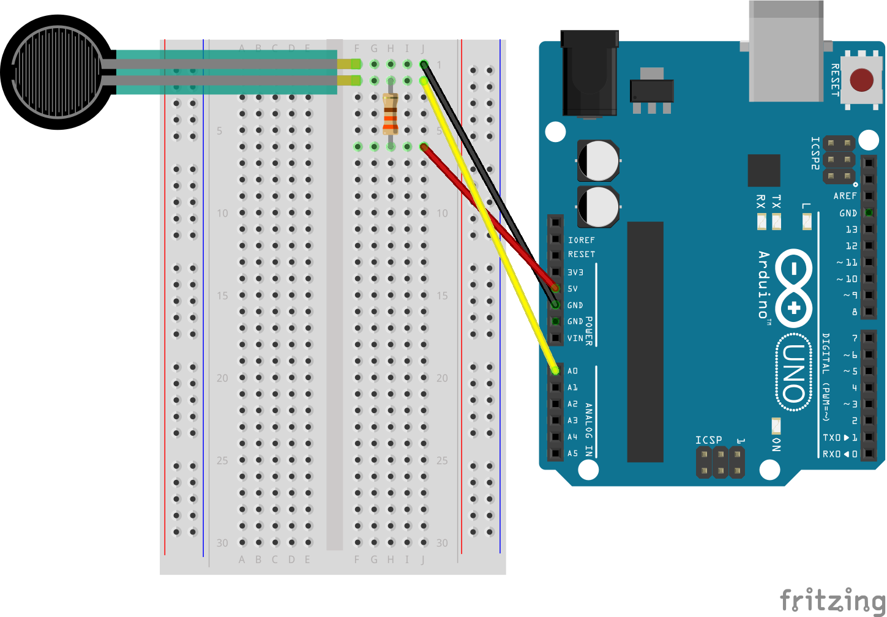
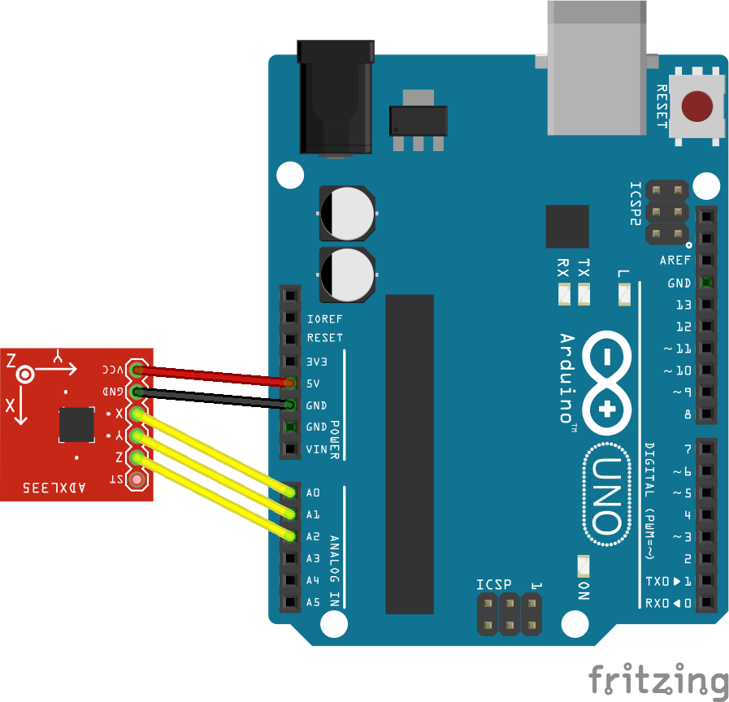
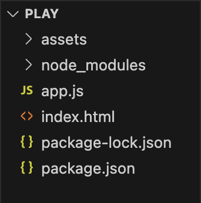

0. 今後のスケジュール（予定）
- 12/18：課題の試遊、物理演算
- 01/15：最終課題制作
- 01/22：最終課題制作
- 01/29：最終課題制作
- 02/05：課題の試遊、まとめと補足、卒業制作（他授業の課題）
※早く完成した人は卒業制作を進める。
※早く完成した人は卒業制作を進める。
「何かしらのセンサーおよびパーツ」を使って、ブラウザ上で「何かしらの変化」を起こす作品を制作する。






npm init -ynpm install socket.io johnny-five
/* app.js */
const fs = require('fs');
const http = require('http');
const hostname = '127.0.0.1';
const port = 3000;
const index = fs.readFileSync('./index.html', 'utf-8');
const server = http.createServer((req, res) => {
const pathName = req.url;
if (pathName === '/') {
res.writeHead(200, {
'Content-type': 'text/html'
});
res.end(index);
} else {
res.writeHead(404);
res.end('Not Found...');
}
});
const five = require('johnny-five');
const board = new five.Board();
board.on("ready", () => {
console.log("Arduino ready!");
const sensor = new five.Sensor({
pin: "A0",
freq: 30
});
server.listen(port, hostname, () => {
console.log(`Server running at http://${hostname}:${port}/`);
const io = require("socket.io")(server);
io.on("connection", (socket) => {
console.log(`Connection completed!`);
sensor.on("change", () => {
io.emit('sensor_value', sensor.value);
});
});
});
});<!DOCTYPE html>
<html lang="ja">
<head>
<meta charset="UTF-8">
<meta name="viewport" content="width=device-width, initial-scale=1.0">
<title>p5play</title>
<style>
canvas {
background: #ddd;
border: 1px solid #aaa;
}
</style>
</head>
<body>
<body>
<!-- socket.io CDN -->
<script src="https://cdn.socket.io/4.6.0/socket.io.min.js" crossorigin="anonymous"></script>
<!-- p5.js CDN -->
<script src="https://cdn.jsdelivr.net/npm/p5@1.8.0/lib/p5.min.js"></script>
<script src="https://cdn.jsdelivr.net/npm/planck@latest/dist/planck.min.js"></script>
<script src="https://p5play.org/v3/p5play.min.js"></script>
<script>
let val = 0;
const socket = io();
socket.on("sensor_value", (recieve) => {
val = recieve;
});
function preload() {}
function setup() {
createCanvas(640, 480);
}
function draw() {
//最大値と最小値の設定
let min = 500;
let max = 1000;
//val = constrain(val, min, max);
console.log(val);
}
</script>
</body>
</body>
</html>